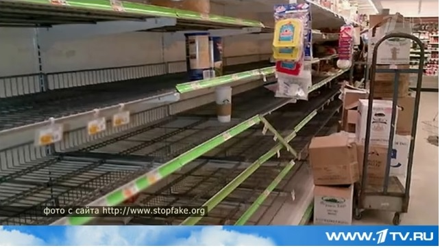
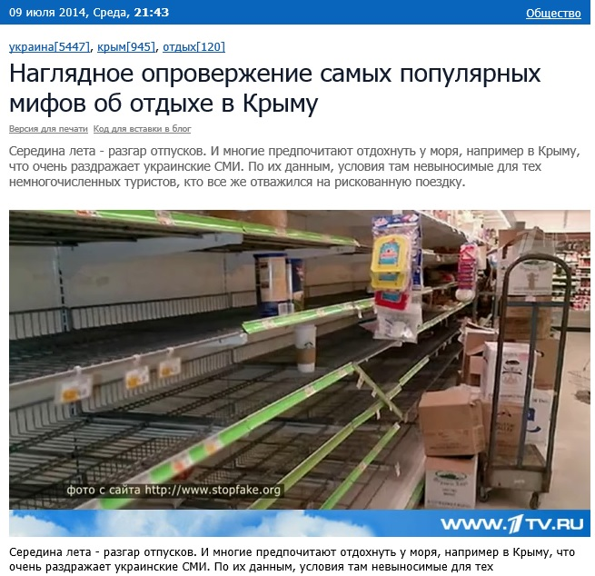
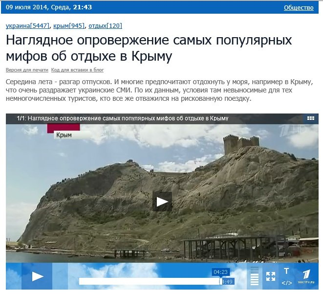

Первый канал солгал, обвинив сайт Stopfake.org в создании фейков
Российский «Первый канал» 9 июля в вечернем выпуске новостей в 21:00 по московскому времени показал сюжет «Наглядное опровержение самых популярных мифов об отдыхе в Крыму».На 3:14 минуте автор сюжета рассказывает о разоблачении, о котором ранее писал Stopfake.org в статье «Эспресо.TV проиллюстрировало новость о нехватке продуктов в Крыму фотографией из США».
В частности, автор сюжета на «Первом канале» говорит: «Следующий миф украинских средств массовой информации: Крым на грани продовольственной катастрофы.В качестве иллюстрации — фотография пустых полок в магазине.И кажется, совсем не важно, что снимок сделан несколько лет назад в американском супермаркете.Главное – напугать туристов с Украины».
В это время на экране появляется фейковая фотография с копирайтом «фото с сайта http://www.stopfake.org».

Внимание «Первого канала» к опровержениям Stopfake.org и их популяризация — позивная тенденция.
Однако «Первый канал» не указал в своем сюжете несколько важных моментов:
1.Автор разоблачения — не «Первый канал», а Stopfake.org.
2.Фото, показанное в сюжете, было представлено как фото из Крыма не сайтом Stopfake.org, а сайтом Эспресо.TV.
Таким образом, подписав снимок «фото с сайта http://www.stopfake.org» и не уточнив, что Stopfake.org — не автор фейка, а его разоблачитель, «Первый канал» приписал авторство фейка сайту Stopfake.org.И этим создал еще один фейк, то есть солгал.
Кроме того на 4:21 минуте в кадре показывают Генуэзскую крепость в городе Судак.При этом автор сюжета утверждает, что находится в районе Большой Алушты.Судак, как известно, в этот район не входит.

Posted On: 2014-07-09T21:00:00

Content Date: 2014-07-09
Download Date: 2021-07-16
Document ID: L0C04FE1M